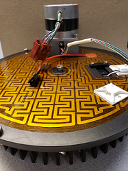
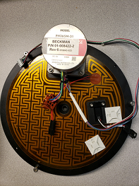
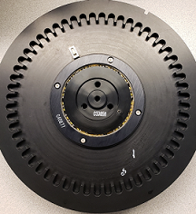

Installing New Single Bearing Wash Carousel/Wheel Assembly
This procedure describes how to install the new single bearing wash carousel or wheel assembly.
Perform this procedure when replacing or upgrading an existing wash carousel assembly.
- Power down the instrument.
- Remove the analytical module. Refer to Removing Analytical Module procedure.
-
Remove the existing wash carousel from the analytical module.
- Remove the insulation from the underside of the wash carousel.
- Disconnect the two heater connectors, the carousel home sensor connector, the carousel motor connector, and the carousel index sensor connector from the analytical module interface PCB.
-
Loosen the screws that hold the bottom plate cover to the wash carousel housing.
For non-single bearing wash carousel, remove the plate cover and the wash carousel.For single bearing wash carousel, remove the plate cover with the wash carousel.
-
Install the single bearing wash carousel assembly.

-
Verify the new carousel assembly hardware components.
- Remove the hex screw holding the plate cover and the wash carousel.
- Separate the plate cover and wash carousel for inspections.
- Verify the cover has motor, sensors, heater tap, and three screws installed.

- Verify the wash carousel has no damages.

- Reinstall the hex screw to hold the cover and carousel in place.
- Ensure the hex screw is tightened to hold the plate cover to the wash carousel.
- Insert the wash carousel assembly into the analytical module.
- Tighten the plate cover screws.
- Connect the two heater connectors, the carousel home sensor, and the motor connector, and the carousel index sensor connector on the analytical module interface PCB.
- Reinstall the wash carousel bottom insulation.
-
Verify the new carousel assembly hardware components.
- Reinstall the analytical module. Refer to Installing Analytical Module procedure.
-
Verify that wash carousel functions properly.
- Power up the instrument and initialize.
- Perform the wash carousel alignment. Refer to the Aligning Wash Carousel procedure.
- Perform two cycles of wash carousel transfer exerciser test.
-
Run system check.
Refer to the Instrument Verification Protocol for Access Service Repair document for more details.